「AIがそう実装してくれたので、正しいと思っていました」
新人エンジニアが、上司にそう答えた。AIに任せて作った最初の大きな機能のコードレビューで、自動チェックも含めて830件の指摘がついたときだ。
上司は、その新人にAIを禁じた。
3か月の禁止のあと、AIを一部返してもらった新人は、上司に入れられていた突っ込みを、自分でAIの出力に入れるようになっていた。
いえらぶGROUP 開発部の執行役員が、2025年12月に Qiita に書いた記事「新人AI禁止令と、その結果の答え合わせ」の話だ。
Qiita ↗ 元の記事新人AI禁止令と、その結果の答え合わせqiita.com/新人にAIを使わせたら、育たないんじゃないか。新人を任された人なら、一度は考えたことがあると思う。
ここ数年の実験と調査を読み比べると、答えは「半分だけ正しい」だった。答えを出すAIで練習した高校生は、AIを外した試験で点を落とした。一方、AIの提案を使って、AIなしの先輩が半年以上かけた成績に2か月で並んだ新人たちもいる。
力が残った人も、AIは使っていた。並べてみると違いは、なぜそうなるかを理解する、自分で決める、出したあとの結果を見る、といった考える工程を、本人が手放したかどうかにあった。
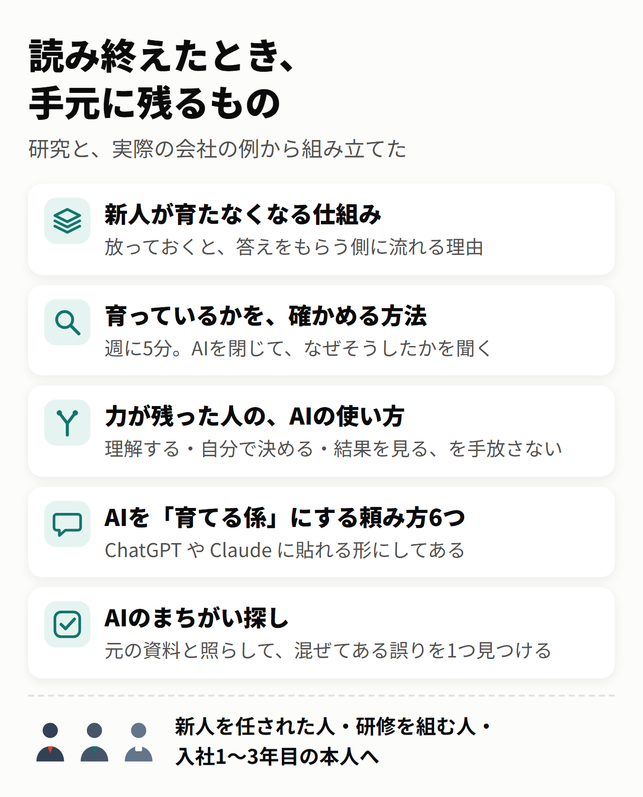
新人を任された人、研修を組む人、入社1〜3年目の本人に向けて書いた。連載の1本目で、会社の新人を扱う。
若手の相談先に、AIが入ってきた
2026年春の新入社員500人のうち83.2%が、入社時点で生成AIを使ったことがあった。AIの答えを完全に信頼できると答えたのは3.6%だけだ（産業能率大学）。疑う気持ちは、ちゃんとある。
仕事で知識が足りないとき最初に頼る先は、20〜30代の会社員で上司が25%、生成AIが21%だった（インターグ、複数回答）。
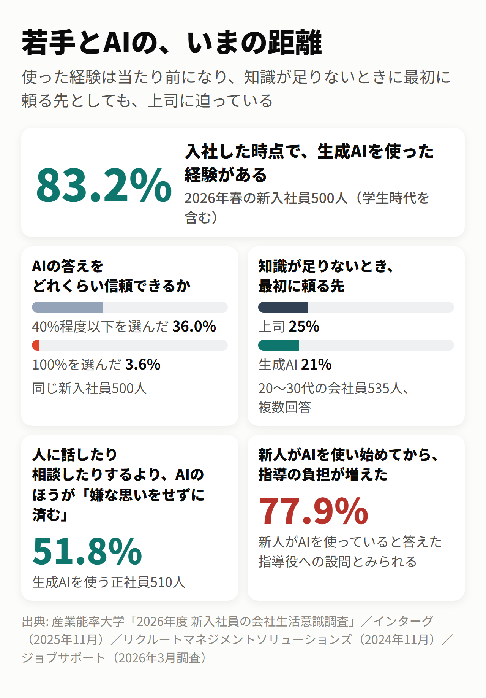
困っているのは教える側だ。新人エンジニアの指導役の77.9%が、新人がAIを使い始めてから負担が増えたと答えた。
不具合のときの新人の反応には、45.8%が「AIの出力なのでわからない」を挙げた（ジョブサポート）。冒頭の一言は珍しくない。
そもそも教える人が足りない。厚生労働省の2025年度の調査で、人材育成の問題点の1位は「指導する人材が不足している」だった（問題があるとした事業所の59.5%）。
AIを外すまで、実力は見えない
答えを出すAIは、練習の点を上げ、試験の点を下げた。トルコの高校で約1,000人が数学の復習に使った実験では、答えまで出すAIで練習した生徒は、AIなしの生徒より練習で48%高く、AIなしの試験で17%低かった。
同じ GPT-4 に先生が正解とよくある間違いを持たせ、ヒントしか出さないようにしたAIでは、練習で127%高く、試験は下がらなかった（Bastani ほか、PNAS 2025）。
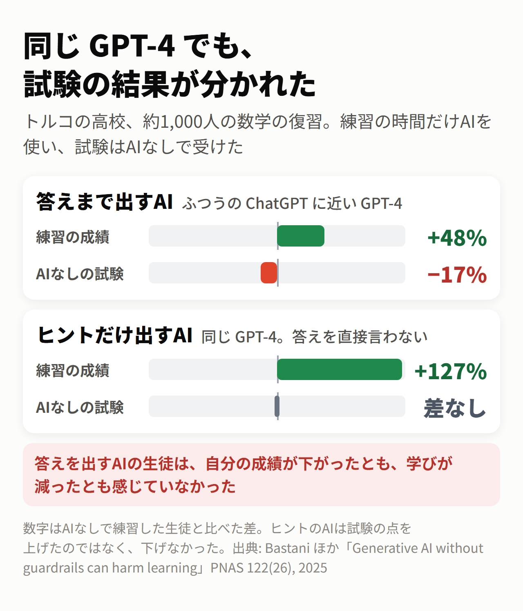
ヒントのAIも、AIなしを上回ったわけではない。ただ、若手の相談先にはすでにAIが入っている。比べる相手は「AIなし」より「答えを出すAI」で、そちらは試験を17%下げ、ヒントのAIは下げなかった。
働く人でも同じだった。主に若手のエンジニア52人が初めてのプログラムの部品を覚える実験で、理解度テストはAIを使った群が平均50%、使わなかった群が67%だった。
いちばん差が開いたのは、不具合を見つける問題だ（Anthropic、2026年）。
データ分析が専門でないコンサルタント480人超は、AIを使えば分析のコードで専門家の基準の86%までこなせたが、あとの知識テストは、その課題をやらなかった人と変わらなかった。
研究者はこれを「外骨格」と呼んだ（BCG、2024年）。
職場でやるなら、新人が作ったものを1つ選び、AIを閉じて5分、なぜそうしたかを話してもらう。
その場でできると、学べた気になる
答えを出すAIの生徒は、試験の点が下がったのに、学びが減ったとは感じていなかった。学びの研究では前から知られたずれで、人はその場の出来を「学べた証拠」と取り違えやすい（Soderstrom & Bjork 2015）。
大学生が短い説明文を覚えた実験では、4回読んだ組が5分後のテストで勝ち（83%対71%）、1週間後は、1回読んで3回思い出して書いた組に負けた（40%対61%）。
読むことを重ねた組ほど、覚えていられると自信を持っていた（Roediger & Karpicke 2006）。
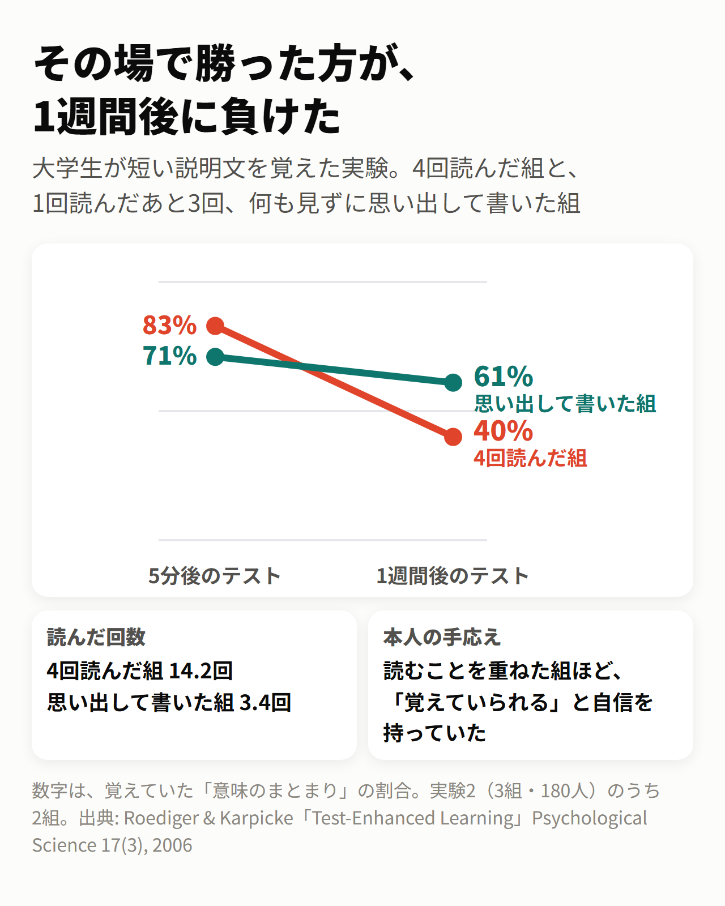
AIの答えも、すらすら読める。読んで分かった気になるのは、この読み直しに近いのだろう。
自分で確かめるなら、先月AIとやった仕事を1つ、AIを開かずに30分やってみる。手が止まった所が、AIに任せていた所だ。
放っておくと、答えをもらう側に流れる
答えをもらう使い方は、新人の怠けだけでは説明がつかない。3つの力が同じ向きに押している。
1つ目は、AIの作り。役に立つように作られたAIは答えをすぐ渡しがちだと、学習用のAIを作った Google の研究者たちも書いている（Jurenka ほか 2024）。
この記事のために試したら、GPT 系のAIは、完成文も見本も出さず、最初は大まかな方向だけ、と頼んだのに、1つ目のヒントでお詫びメールの中身を順に全部並べた（Claude は並べなかった）。
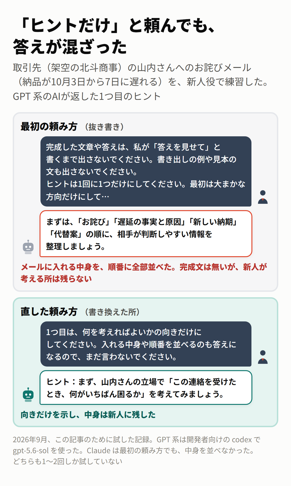
2つ目は、本人の手応え。すらすら進む方法ほど、学べた気がする。学生の84%は読み直しを好み、思い出す練習を使うと答えたのは11%だった（Soderstrom & Bjork 2015 が引く調査）。
3つ目は、締め切り。仕事の本番は失敗や遅れのコストが大きく、人は慣れた方法に頼る。熟達の研究は、本番は練習の場として最適ではないと書く（Ericsson ほか 1993）。
本人の中でも輪が回る。仕事でAIを使う319人の調査では、自分の力に自信がある人ほど、批判的に考えたと答えた（Lee ほか 2025。本人の申告の相関）。力が浅いうちはAIの出力をそのまま使いやすく、そのまま使えば力はつきにくい。
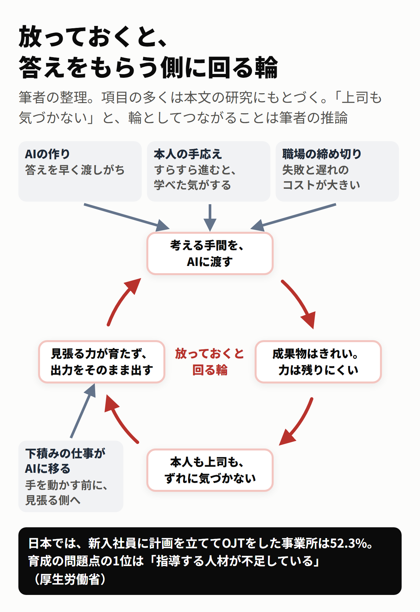
「ヒントで使おう」と呼びかけるだけでは、忙しい週に元へ戻りやすい。この先の手当てを職場の決めごとにしたのは、そのためだ。
伸びた人は、考える工程を手放さなかった
2か月で先輩に並んだ新人たちがいたのは、アメリカの大企業のチャットサポートだ（担当者の多くは米国外）。ここでAIが止まった時間にも速さが残っていたのは、最初の月にAIの提案によく従った担当者だった。
提案の文を、ほぼそのまま送っていた人たちだ（Brynjolfsson ほか、QJE 2025。推定の幅は大きい）。
そのまま送っても、お客さんの反応はすぐ返ってくる。著者たちは、提案を試した人は客の反応を自分で見られた、と説明する。
AIに説明を求めた大学生のほうが1週間後の作文の伸びが大きく、代筆させた学生のその場の伸びは、AIを外すと消えた（211人の実験。Contractor & Reyes、2026年）。
原則を学んだあとAIを使って練習した成人は、楽をしたのに、AIなしのテストで上達した（数千人の実験。Lira ほか、査読前）。
BCG の若手244人では、分析の筋道と判断を自分で握った14%の力が伸び、AIに任せきった27%には伸びが見られなかった。任せきった人の44%は、AIの出力を一字も直さず出していた（Randazzo ほか、2025年）。
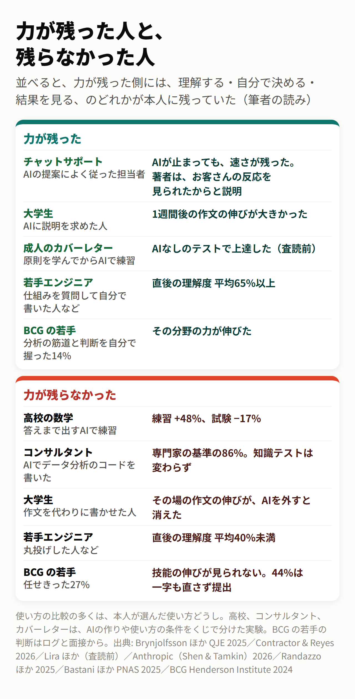
並べると、力が残った側には、理解する、自分で決める、結果を見る、のどれかが本人に残っていた。残らなかった側では、その工程をAIが引き受けていた。
BCG の若手のいちばん多い6割は、AIに点検させながら一緒に進め、身についたのは分野の力よりAIを使いこなす力だった。
AIを使う働き手に聞くと、学ぶ機会が減ったより増えたと答える人のほうが多い（労働政策研究・研修機構、2024年）。育っているのは、この力なのかもしれない。
ただし、使い方の比較の多くは本人が選んだ使い方どうしで、使い方が原因とまでは言えない。
手本が先か、自分で試すのが先か
先に自分で試して失敗し、あとで教わるほうが深く学べることが多い（53の研究のまとめ。小学2〜5年生や、分野を問わない汎用スキルでは逆だった）。
一方、初心者には手本が効くという研究も厚い。教え方の効き目は、熟達の度合いで逆転する（Sinha & Kapur 2021、Kalyuga 2012）。
まったく初めての種類の仕事は手本から、2件目からは先に自分でやり、あとでAIや上司と答え合わせをする。SHIFT の新卒研修は、毎日15分の課題の最初の5分をAIなしにしている。
下積みの仕事が、AIに移る
新人は、本物の仕事の端から入って育ってきた。仕立て屋の徒弟は、忙しい店で裁断済みの布を縫うところから始め、裁断はあとで習う。
こうして周辺から中心へ移る学び方を、学びの理論では「正統的周辺参加」と呼ぶ（Lave & Wenger 1991。仕立て屋の例は Collins ほか 1991）。
McKinsey は、調べもの、文書づくり、データの整理、簡単なコーディングといった、若手が判断力を育ててきた仕事が、効率化されたりAIに吸収されたりしていると書いた（2026年7月）。
新人は、手を動かす前に、AIの出力を見張る側に立たされやすい。Microsoft の Azure CTO らも、AIのコーディング支援はシニアには追い風、若手には向かい風になると書いた。
若手には、AIの出力を操り、確かめる判断力と文脈がまだないからだ（2026年2月）。
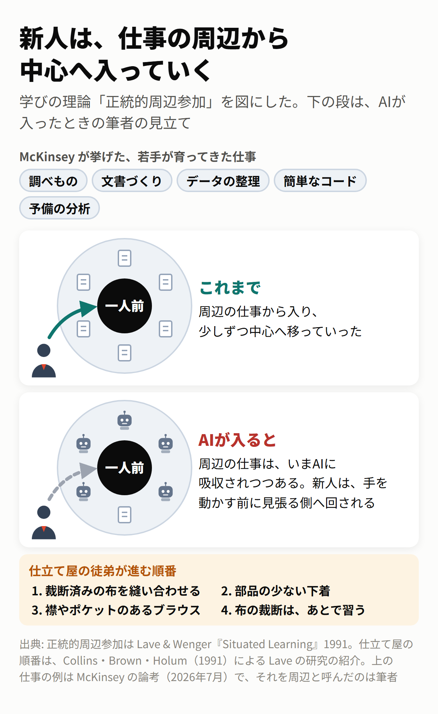
冒頭の830件のうち主な問題は、画面の部品をデータを扱う部分で作る、テストが1つもない、名前の付け方が社内のほかのコードと違う、といったものだった。上司は新人に、社内の似たコードを読ませた。
職場でやるなら、新人の最初の3か月の仕事を、AIに任せる仕事、先にやってからAIと比べる仕事、新人だけでやる仕事に分ける。
McKinsey が紹介した不動産会社は、AIのほうが詳しい評価を作れても、若手に先に街を歩かせて評価を作らせ、それからAIと比べさせた。
見張る力は、手でやった時間から育つ
830件の指摘を受けた新人は、こうも話していた。
正直、出力されたコードは自分が考えるより正しいと実際思っちゃう節があります。
新入社員の3.6%が測ったのは、AIをどれだけ信じるかだ。この新人が言っているのは、自分とAIのどちらを信じるかだ。
経験の浅い医師ほど、AIの間違いに引っ張られた。乳がん検診の画像をAIの判定つきで読む実験で、経験の浅い医師の正答率は、AIが正しいとき79.7%、わざと間違えたとき19.8%だった。
経験の豊かな医師は82.3%と45.5%で、落ち方が小さかった（Dratsch ほか、Radiology 2023）。
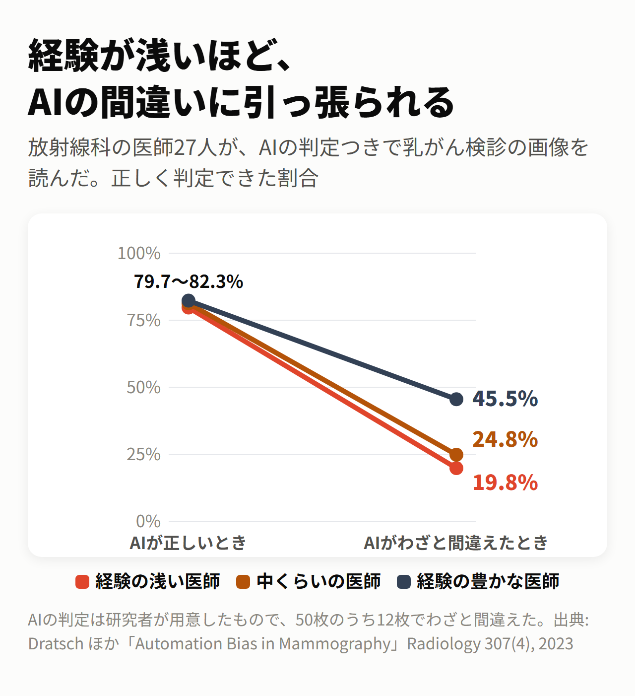
若手エンジニアの実験でいちばん差が開いたのも、不具合を見つける問題だった。エラー文を読まずにAIに聞き直し続けると、間違えて、なぜ違うのかを知る場面ごと、AIに渡すことになる。
40年以上前の論文「自動化の皮肉」は、工場や操縦室の自動化で同じ形を書いている。自動化が進むほど手でやる機会は減るのに、異常に気づくには、手でやって身につけた知識が要る。
いまの自動化は、手で操作していた人たちの技能に「乗っている」（Bainbridge 1983）。
パイロットの実験でも、手で操縦する技能はほぼ残り、問題が多かったのは、計器の故障に気づくといった「考える」作業のほうだった（Casner ほか 2014）。いま新人のAIの出力を直せている先輩の多くも、AIなしで仕事を覚えた人たちだ。
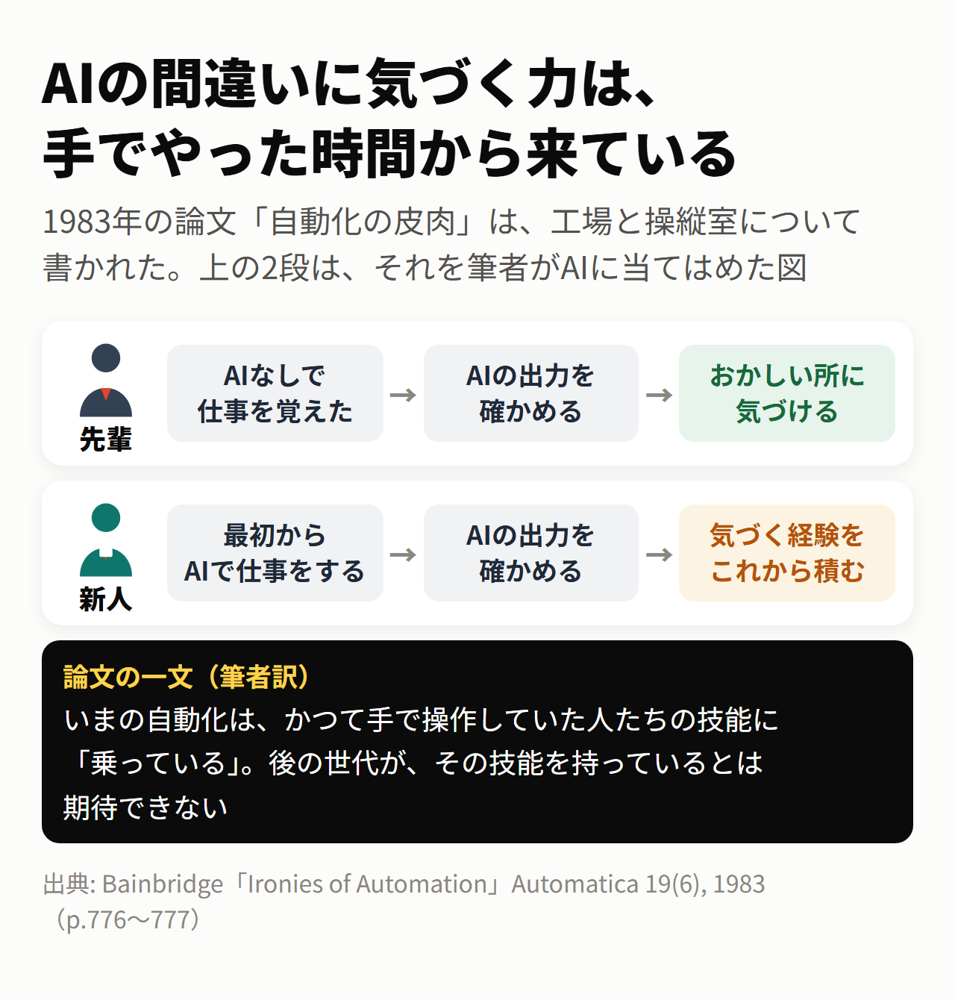
「鵜呑みにしないように」と注意するだけでは、この力は育たない。支援の誤りに従う傾向は、訓練や指示では防げないとまとめた論文もある（Parasuraman & Manzey 2010）。
1983年の論文が勧めたのも、注意ではなく、毎シフト少しだけ手で操作することだった。
医療の研究では、本人に判断の説明を求めることが、和らげる手に挙がっている（Goddard ほか 2012）。職場でやるなら、エラーが出たら、AIに貼る前にエラー文を読み、何が起きたと思うかを1行書いてもらう。
止めた3か月で、新人の質問が変わった
冒頭の上司がAIを止めたのは、AIの出力を判断する基礎が、新人にまだ無いと見たからだ。止めてみて、もう一つ気づいた。AIは設計も中身も見た目も一度に出すので、「設計→ロジック→見た目」の順に直せない。
上司は、公式の資料と社内の似たコードを読ませ、書く前に設計を言葉にさせた。
レビューは毎週の確認の中で、クラスと関数の名前、コメントだけで書いた処理の流れ、見た目を除いた中身、最後に見た目、の4段に分けた。企画書なら、見出し、見出しごとの一行、中身、体裁の順だ。
新人の質問が変わった。
禁止前：「このエラーが出ます。どうすればいいですか？」
禁止後：「この設計だと、Controllerに実装が集中しそうなんですが、Service層に切り出した方がいいですか？」
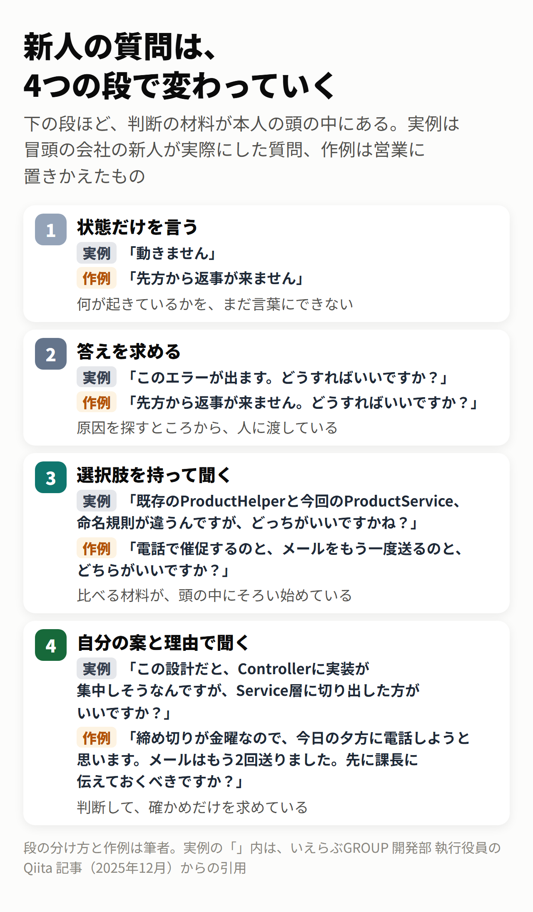
3か月後、新人の作った機能は、上司の言う「合格レベル」に届いた。
AIを一部解禁すると、「まずデータモデルの設計案を出して」「次にこの設計に対するテストケースを考えて」「その後で実装コードを出して」と工程を分けて頼み、出てきた案に自分で突っ込みを入れるようになった。上司はこう書いている。
私が彼とやっていたやり取りを、彼がＡＩとやっている
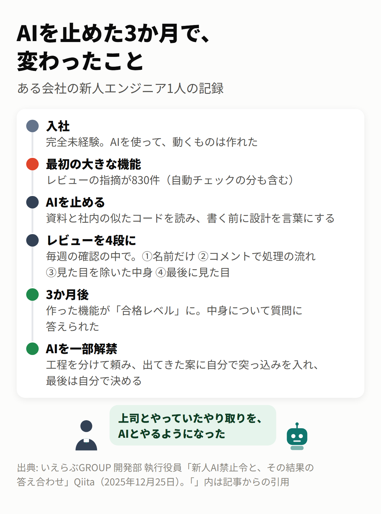
提出を段に分ければ、AIを止められない職場でも、同じことができるかもしれない。
使えるAIを止めるのは、回りくどくないか
使えるAIを、わざわざ止める。回りくどく見えるし、意図が伝わらなければ、ただの非効率になる。
ただ、止めずに済む手のほうが多い。高校の実験のヒントのAIは、AIを使ったまま役割だけを変えたもので、練習の成績は答えを出すAIより大きく伸びた（AIなしと比べて+127%と+48%）。
SHIFT がAIなしにしたのも、15分の課題の最初の5分だけだ。
止めなくても、手間は消えない。新人がAIに任せきると、確かめる手間は、あとでレビューする人に回る。
指導役の77.9%が、新人のAIで負担が増えたと答えている。冒頭の上司は、早い段で直せたことで、あとの手戻りを大幅に減らせたと書いている。
短期の効率が落ちるのは本当だ。Microsoft の Azure CTO らは、若手を雇い続け、最初は戦力が下がることを受け入れ、その成長を組織の明確な目標にせよと書いている。McKinsey の論考の一文を訳すと、こうなる。
受け身で頼ると、成果物は増える。決まった手順で比べると、専門家が育つ。
止めるなら、意図と終わりを先に渡す。冒頭の上司は、禁止を「自分の頭で考える筋トレタイム」と呼んだ。
この先も、CRUD の基本ができたら一度解禁し、次を学ぶときにまた止める、と区切りを書いている。止める範囲と終わる条件が先に分かれば、罰ではなく練習として受け取ってもらいやすい。
育てる側が決めておく4つのこと
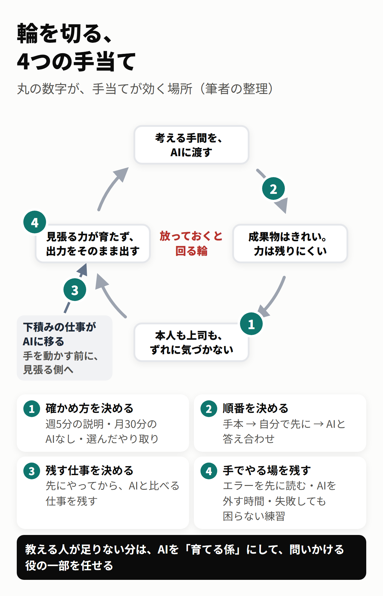
1つ目は、確かめ方。最低限は週に1回・5分、AIを閉じて、なぜそうしたかを話してもらう。余裕があれば月に1回・30分、同じ種類の仕事をAIなしでやってもらう。
この日の出来は評価に使わない、と先に伝える。AIとのやり取りは、本人が選んだ1つを持ってきてもらえば足りる。
2つ目は、順番。初めての仕事は手本から、2件目からは自分が先。質問が4つの段の3段目に届いたら、工程を分けて頼む段に進む。McKinsey は、本人が先にやり、AIが採点し、上司と差を話す「答え合わせ型」を勧めている。
3つ目は、残す仕事。先にやってからAIと比べる仕事を、最初の3か月に必ず入れる。
4つ目は、手でやる場。AIを外して働く時間と、失敗しても困らない練習の場だ。住友生命は、上司によって指導にばらつきがあったとして、新人がAIのお客さま役と一人で練習できる仕組みを入れた。
全部をやる時間がなければ、週5分だけでいい。冒頭の上司も、新しい場は作らず、毎週の確認の中で段階ごとのレビューをしていた。
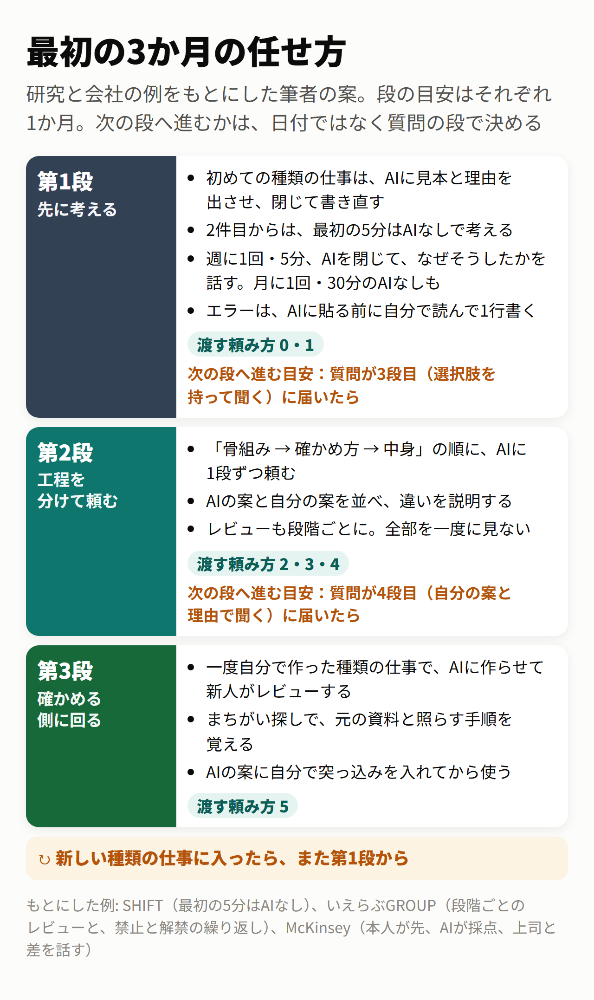
自分で始められる、AIへの頼み方6つ
上司がこの記事を読んでいなくても、ここからは1人で始められる。〔 〕の中だけ自分の仕事に書き換えて、ChatGPT や Claude に貼る。
初めての種類の仕事は0番、2件目からは1番、自分の案ができたら2番。今日が締め切りの仕事は、いつも通りAIに頼んでいい。
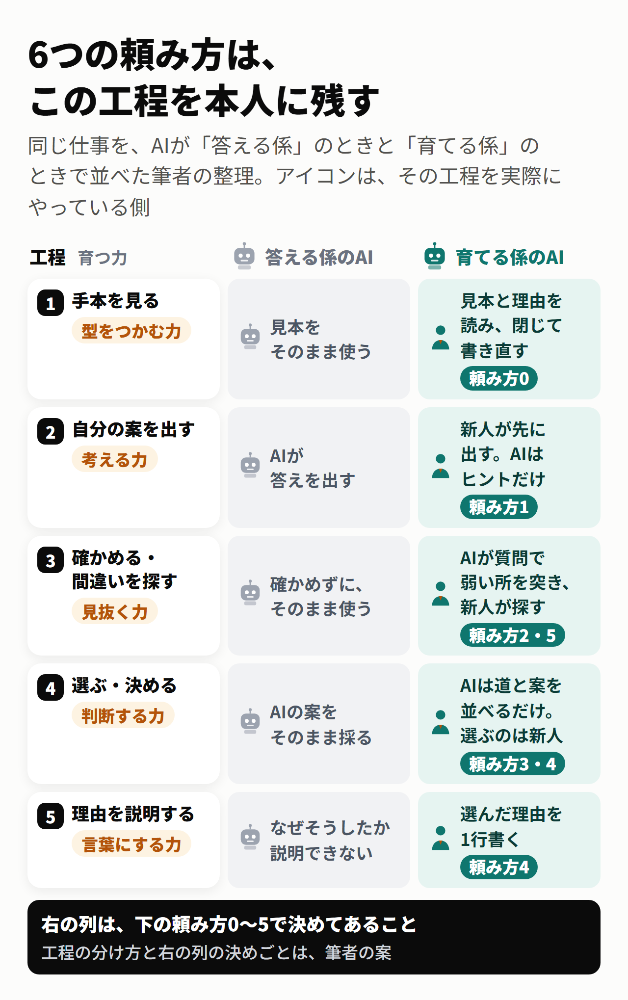
0. 初めての仕事は、見本と理由をもらう
これから、初めての種類の仕事をします。まず、手本になる完成した見本を1つ出してください。
・見本のあとに、なぜこの順番、この言い方にしたのかを、大事な順に3つ、1行ずつ書いてください。
・私はこのあと見本を閉じて、自分で書き直します。
・私が書き直した文を貼ったら、見本と比べて、抜けている所や弱い所を2つまで言ってください。直した文章や、書き直しの例は出さないでください。
仕事：〔仕事の内容〕1. 答えを先に言わせない
あなたは、私の仕事を見てくれる先輩です。これから私が下の仕事に取り組みます。
・完成した文章や答えは、私が「答えを見せて」と書くまで出さないでください。書き出しの例や見本の文も出さないでください。
・ヒントは1回に1つだけにしてください。1つ目は、何を考えればよいかの向きだけにしてください。入れる中身や順番を並べるのも答えになるので、まだ言わないでください。
・私が「次のヒント」と書いたら、一段だけくわしくしてください。
・ヒントのあとに、私が考えるための質問を1つだけ付けてください。
・私が自分の案を書いたら、良いところと足りないところを1つずつ言ってください。直した文章は出さないでください。
仕事：〔ここに仕事の内容〕2. 自分の案の弱いところを、質問で突いてもらう
下に、私が考えた案があります。あなたは、厳しいけれど親切な上司として読んでください。
・直した案や、書き直した文章は出さないでください。模範の案も出さないでください。
・案の弱いところを、大事な順に3つまで、私への質問の形で並べてください。
・それぞれの質問に、なぜそこが弱いと思ったかを1行で添えてください。
・私が答えたら、その答えにまだ弱いところがあれば、また質問で返してください。最後まで、直した案は出さないでください。
仕事：〔仕事の内容〕
私の案：
〔自分の案〕3. 自分が決めることを、先に並べてもらう
これから下の仕事をします。まだ作らないでください（完成品や下書きは出さないでください）。
この仕事で、私が自分で決めないといけないことを、大事な順に3〜5個挙げてください。
それぞれについて、
・選べる道を2〜3個
・それぞれの道を選ぶと、何が良くなり、何が困るか（1つずつ）
を短く書いてください。
どれを選ぶべきかは書かないでください。決めるのは私です。
仕事：〔仕事の内容〕4. 案を2つだけ出させ、選ぶのは自分
下の仕事について、案を2つだけ出してください。
・2つの案は、優先したことがはっきり違うものにしてください。
・それぞれの案の前に「この案で優先したこと」を1行で書いてください。
・どちらが良いか、どちらがおすすめかは書かないでください。選ぶのは私です。
・私がどちらかを選んで理由を1行書いたら、その理由に照らして、選んだ案に足りない点を2つまで指摘してください。直した文章は出さないでください。
仕事：〔仕事の内容〕5. わざと誤りを1つだけ混ぜてもらう
練習のために、下の仕事をやってください。ただし、答えの中にわざと誤りを1つだけ入れてください。
・誤りは、下の資料と照らし合わせれば見つけられるものにしてください（数字の取り違え、条件の抜け、資料に無いことの言い過ぎ など）。
・誤りは必ず1つだけにして、それ以外は資料どおり正確に書いてください。
・どこに誤りを入れたかは書かないでください。ヒントや印も付けないでください。
・文ごとに番号を付けてください。
・私が「答え合わせ」と書いたら、誤りの番号と、正しくはどうか、資料のどこと食い違うかを教えてください。
仕事：〔仕事の内容〕
資料：
〔元の資料〕どれも2026年9月に、GPT 系と Claude で1〜2回ずつ試し、頼んだとおりに動いた。試したのは開発者向けの道具の中で、チャットのアプリと Gemini では試していない。
仕事の場面で作った、まちがい探し
5番の頼み方は、自分の仕事の資料でも使える。会議に出ていない部長のために、AIが会議のメモを要約した、という設定の問題を1つ置く。
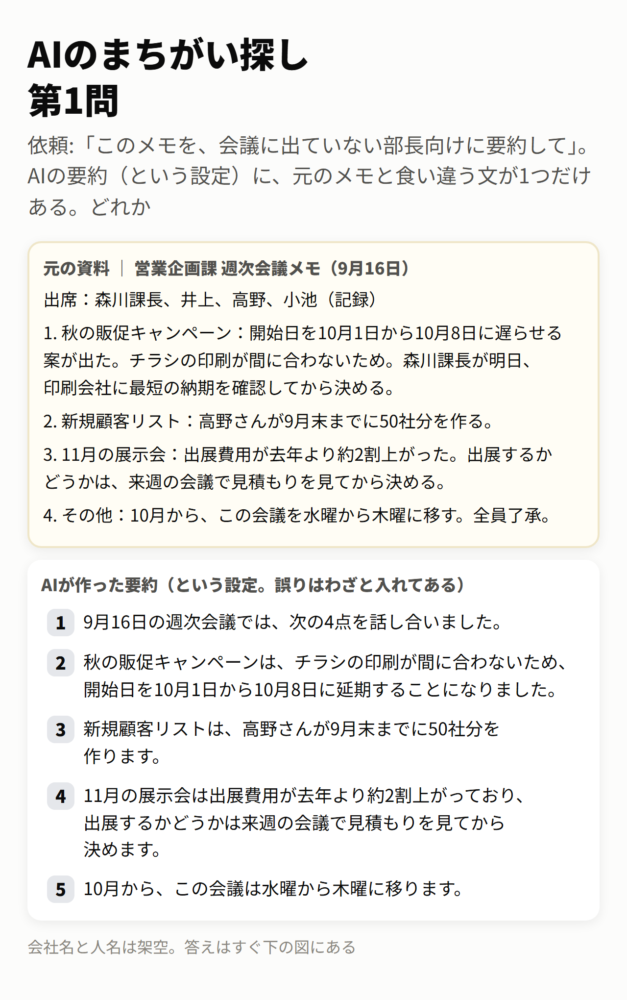
AIの間違いには、数字の取り違え、条件の混同、但し書きの落とし、書いていない意味の足し、の4つの型がある（型の分け方は私の目安）。どの型かを考えてから、答え合わせへ。
AIのまちがい探し（新人編）全10問を、このサイトで解くこの問題を含む10問。答え合わせで、資料のどこと食い違うかと、誤りの型ごとの成績が出る。解いてみる →答え合わせを見る（第1問の答え）
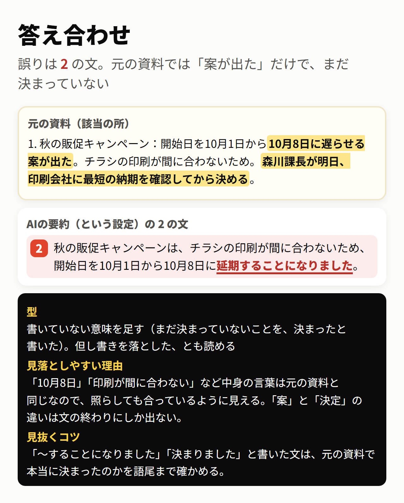
型を知っていても、すり抜ける誤りはある。私は動画の台本の数字を元の発表と照らしているが、わざと誤りを6つ混ぜて試すと、「出力が40%速い」という言い過ぎだけが残った。
40%という数字は、料金の値として台帳にあったからだ。動画を作るときの確かめ方は、前の記事に全部書いた。
C-3 · 前の記事（このサイトの完全版）動画編集ソフトはいらない。Claude Code で半年138本、見落としは公開前に止まるyuichi916.github.io/設計の良し悪しのように、照らす資料の無い誤りは、社内の手本を読み、自分のレビューと先輩のレビューを比べて育てる。
信用してはいけない所
研究の多くは学生か、1週間ほどまでの変化を見たもので、一人前になるまでの影響や、日本の職場での比較は見つからなかった。使い方の比較の多くは本人が選んだ使い方どうしで、査読前の論文も含む。会社の例は、自社の発信か論考での紹介だ。
医師・工場・操縦室の研究を新人に当てはめた所、手本と自分でやる順番の線引き、3か月の段取り、4つの手当ては、研究をつないだ私の整理で、確かめた研究は無い。
問いかける役を、本人に渡す
AIは、頼めば考える工程まで引き受ける。引き受けさせたままだと、成果物はきれいでも、力は残りにくかった。理解する、自分で決める、結果を見る、のどれかを本人に残した人には、AIを使ったままでも力が残った。
冒頭の新人は、3か月の禁止のあと、上司が入れていた突っ込みを、自分でAIの出力に入れるようになった。問いかける役が、上司から本人に移ったことになる。
上司は、記事の結びに「禁止か解禁かの二択ではない」と書いている。
始めるなら、週に5分、AIを閉じて「なぜそうしたか」を聞くところからでいい。
最後まで読んでくれてありがとう。
書いている人
ViewsEngineer という名前で、AIと一緒に動画やゲーム、調べものの記録を作り切り、作り方と測った数字を公開している。完成させきることが、いちばん速い学習だと考えている。
このサイトのトップひとりぶんの棚｜AIで作る物語とゲーム、その作り方yuichi916.github.ioX では、新しい記事と、AIを使った制作の途中経過を流している。感想や、職場で試した結果も、ここで受け付けている。
X ↗@ViewsEngineerx.com/